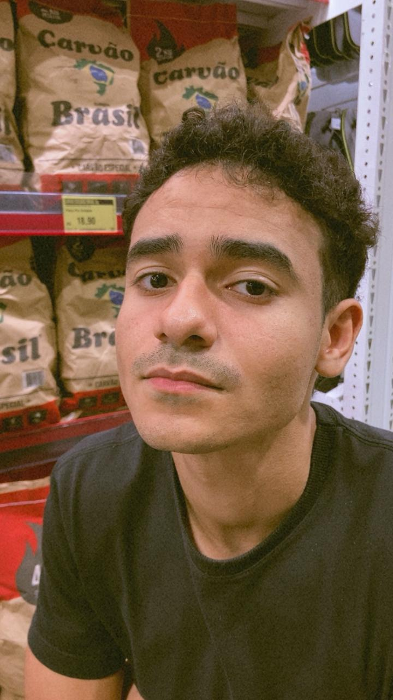

Churrasco
Minha comida favorita é churrasco. Gosto do sabor e também daquele momento de reunir pessoas e compartilhar uma boa refeição.
GL.
PORTFÓLIO PESSOAL

OLÁ, SEJA BEM-VINDO!
Sou estudante da área de Tecnologia da Informação e gosto de programar, aprender novas tecnologias e desenvolver soluções digitais. Fora da tecnologia, gosto de churrasco, pratico jiu-jitsu e curto ouvir samba e pagode. Aqui compartilho um pouco dos meus gostos, interesses e daquilo que faz parte de mim.
Conheça meus interessesUM POUCO SOBRE MIM
Seis coisas que fazem parte da minha personalidade e do meu dia a dia.
Minha comida favorita é churrasco. Gosto do sabor e também daquele momento de reunir pessoas e compartilhar uma boa refeição.

É meu esporte preferido porque exige disciplina, técnica e persistência, além de incentivar o aprendizado constante.

"Onde os Fracos Não Têm Vez" é meu filme favorito. Gosto do clima de suspense e da maneira como a história prende a atenção.

Gosto de programar, resolver problemas e transformar ideias em projetos. É uma área em que sempre posso aprender algo novo.

São meus estilos musicais favoritos. Gosto da energia, das letras e da sensação de curtir música com outras pessoas.

Procuro evoluir continuamente, conhecer ferramentas novas e desenvolver habilidades que contribuam para meus projetos e minha carreira.